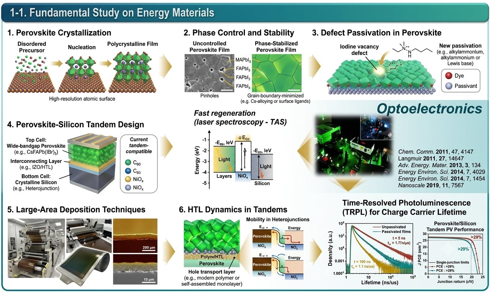
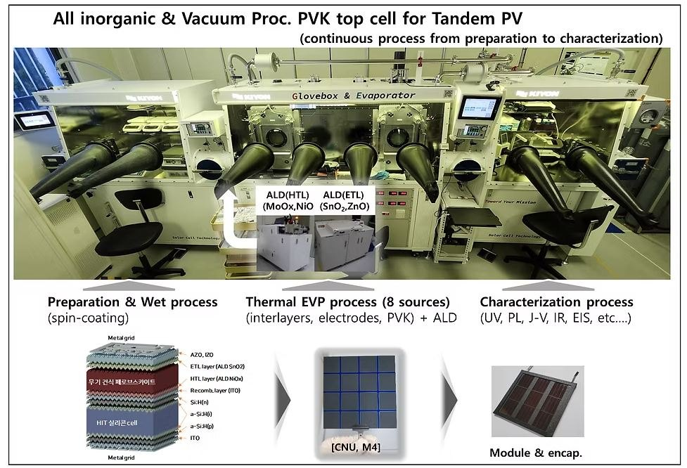
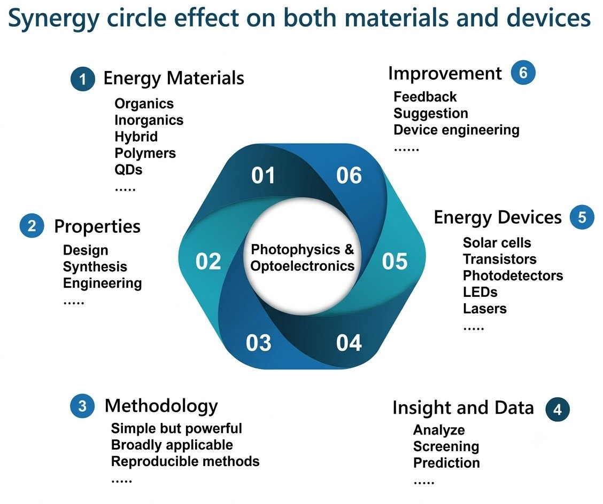

Research
Advancing next-generation photovoltaics through new materials, device architectures, and a fundamental understanding of optoelectronic processes.
Muhammad Adnan’s research focuses on advancing next-generation photovoltaic technologies through the development of innovative materials, device architectures, and fundamental understanding of optoelectronic processes. He is mainly involved in investigating strategies to improve photovoltaic efficiency while identifying and mitigating electronic, interfacial, and operational losses that limit device performance and stability.

Dr. Adnan’s work spans materials discovery, functional composites, semiconductor heterojunctions, and solar-cell and light-emitting-device integration, with particular emphasis on understanding how material interfaces evolve under electrical, thermal, and environmental stress. He combines advanced materials fabrication with comprehensive device characterization to elucidate charge generation, transport, recombination, and carrier dynamics.
- AFM
- SEM
- Current-voltage measurements
- Photovoltaic action spectra
- Photoinduced spectroscopy
- Transient spectroscopy
- Ultrafast spectroscopy
A major research direction is the development of fully and thermally evaporated perovskite photovoltaic devices, alongside novel interface and passivation strategies for improving efficiency and long-term stability. He also employs ultrafast spectroscopy to investigate charge and energy-transfer processes at fundamental timescales.


Collaborations
Dr. Adnan’s research benefits from interdisciplinary collaborations with Prof. Jongchul Lim and Prof. Hyo Sik Chang on ultrafast spectroscopy and thermally evaporated perovskite solar cells, and with Prof. Riaz Hussain on materials design and theoretical investigations of the optical and optoelectronic properties of materials and devices.